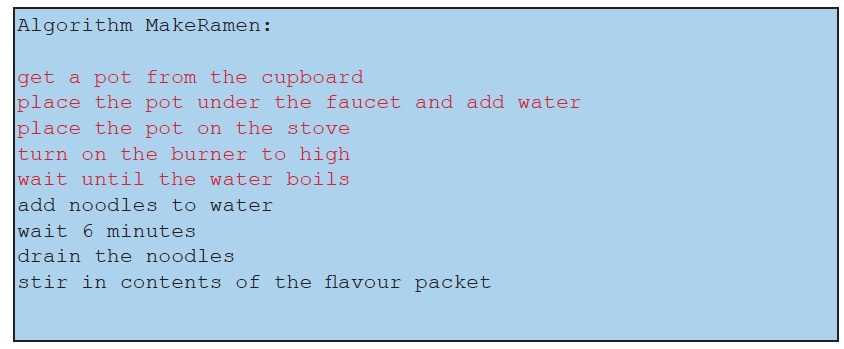

Refinement is the process of adding more details to an algorithm; it is the inverse process of abstraction. For example, we might refine the boil water action by replacing it with a sequence of actions (shown in red text) that describes how to boil water in more detail:

Each of these new actions describes an action that partially carries out the first “boil water” action. But, depending on the sophistication of our cooking robot, the actions may not be detailed: the robot needs precise directions for where and how to position its legs and arms to complete the task. This would require that we further refine the actions “place pot under faucet”, “add water” to pot, etc. to the level of detail where we tell the robot exactly where and how to move its limbs by replacing each of these actions with sequences of even more detailed actions. This is called stepwise refinement. We repeatedly replace actions that are too abstract with a sequence of less abstract, more detailed actions until we reach a level of detail such that the actions are both feasible and self-explanatory for the algorithm’s audience (in this case, our cooking robot).
The ability to think at different levels of abstraction and move between them is critical to success as a programmer and a computer scientist. We abstract away details when they are not necessary, and refine abstractions later when we are ready for the details. It’s not a natural skill, and it takes practice.